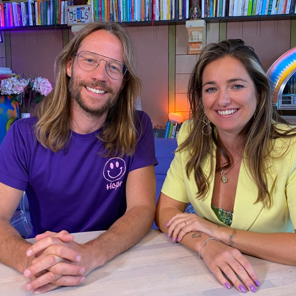
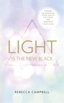
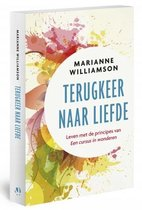
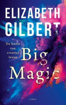

Willemijn Welten | KUKURU #157

De aflevering
In deze KUKURU aflevering is Willemijn Welten te gast. Zij heeft een nieuw boek ‘Wonderen Manifesteren’ dat de veel besproken ‘Een Cursus in Wonderen’ naar vandaag vertaalt. Wat als je elke dag zou voelen dat alles precies is zoals het moet zijn? Als jij echt elke situatie door de bril van liefde kan zien in plaats van angst? Dat je de voldoening niet buiten jezelf zoekt, maar in jezelf vindt en je dingen manifesteert die beter zijn dan jij nu kan bedenken?
Willemijn werkte meer dan 10 jaar voor financiële start-up & corporates tot ze besloot haar hart te volgen en schrijver te worden. Ze woonde in Zuid-Amerika om zich te verdiepen in spirituele en sjamanistische principes en volgde een opleiding bij Gabrielle Bernstein. Terug in Rotterdam startte zij met het schrijven van haar boeken en creëren van mijn kaartendecks. Ze schreef eerder al ‘Manifesteren kun je leren’.
We hebben het over haar reis. Hoe het is als je leven even in elkaar stort en hoe ze daarna haar droomleven manifesteerde. Wil je weten waarom friet soms gezonder is dan salade, voor wie je vergeeft en hoe/waarom je je laat leiden door liefde of angst. Dan zou ik deze zeker luisteren. Het gaat over het nut van het ego en hoe schijn je nou liefde op angst? Waarom kun je beter stop met het zoeken naar je missie? En waarom uitstellen het tegenovergestelde van zelfliefde is. Zoals gewoonlijk bespreken we ook haar favoriete boeken, het ochtendritueel en de dood.
Meer Willemijn?
Wil je het nieuwe boek van Willemijn Welten, ‘Wonderen Manifesteren’? Check https://bit.ly/WonderenManifesteren Mee doen met de workshop: vergeving doe je voor jezelf. Check https://bit.ly/VergevingDoeJeVoorJezelf of één van de kaartendeck sets bestellen? Check: https://bit.ly/KaartendeckManifesteren Of voor kinderen: https://bit.ly/Kinderkaarten
Beluister de podcast
Bekijk de podcast met beeld
Willemijn's boeken
Dit zijn de meest inspirerende boeken volgens Willemijn. Wil je de boeken zien van de andere gasten? Check dan de KUKURU boekenkast!
Light is the new black
€13,49
Op voorraad. Voor 23:59 besteld, morgen in huis
Koop bij bol.comTerugkeer naar liefde
€22,50
Op voorraad. Voor 23:59 besteld, morgen in huis
Koop bij bol.comBig magic
€20,99
Op voorraad. Voor 23:59 besteld, morgen in huis
Koop bij bol.com